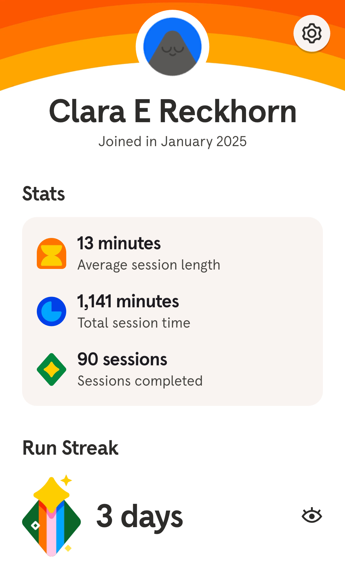
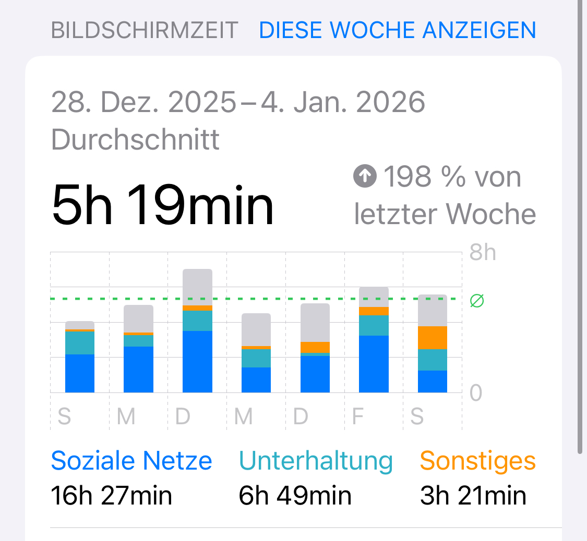
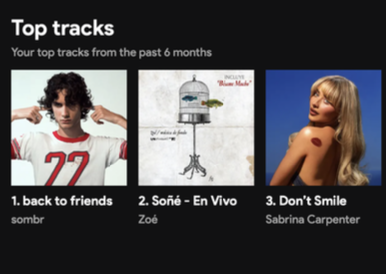
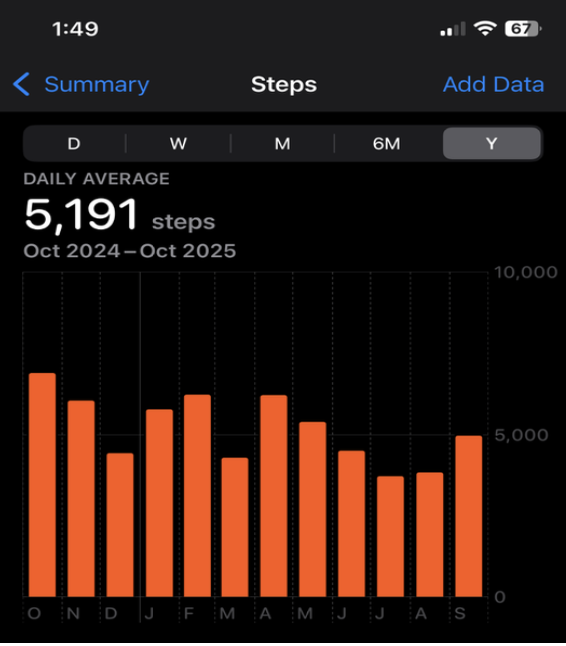
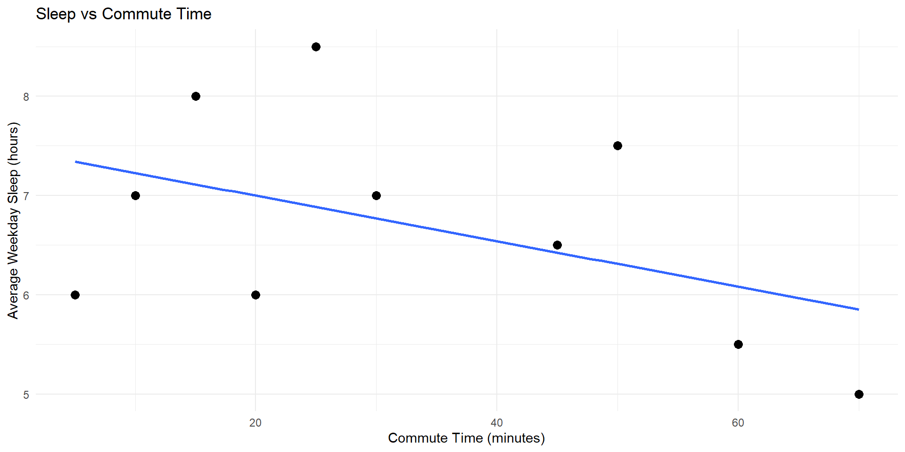
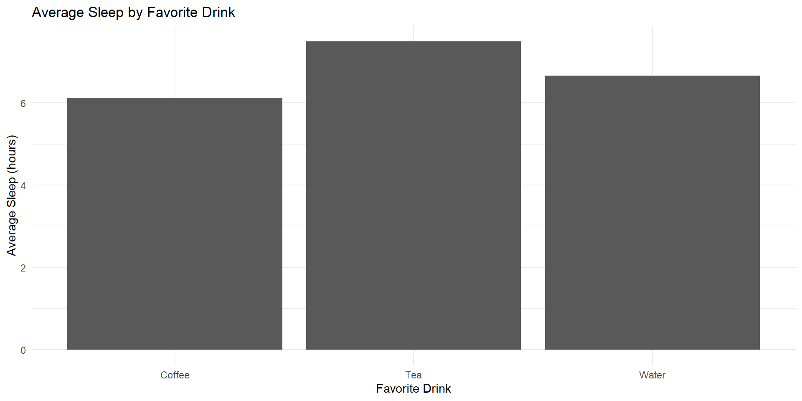
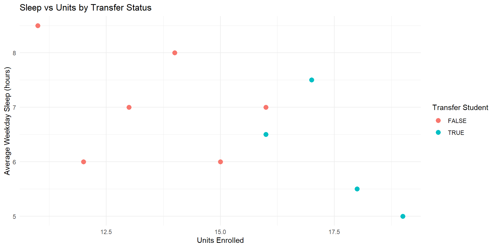
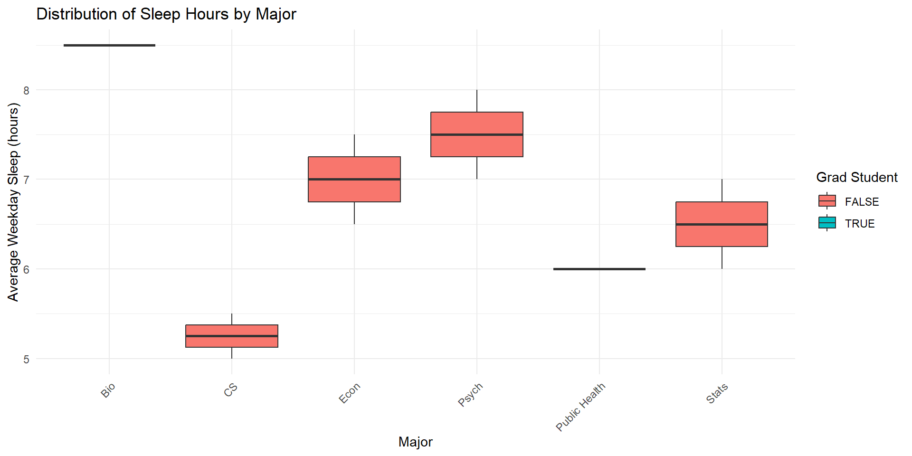

Week 1
Introduction
Welcome!
About Us
Montse
- Sophomore Stats Major
- Hometown: Mexicali, Baja California + Calexico, California
- Fun fact: I have a dog named Shakira!
- Course reader for Stat133, Stat 33B, now tutor for Stat133
Note
Email me at montserrat_ibarra@berkeley.edu
Clara
- Senior Stats Major
- Hometown: Palos Verdes, CA + Osnabrück, Germany
- Fun fact: Pursuing masters in Europe!
- GSI for Stat133 + led HelloWorld
- Transfer student
Note
Email me at clara_reckhorn@berkeley.edu
Jocelyne
- Senior Stats Major
- Hometown: San Mateo, CA
- Fun fact: I did middle and high school in La Paz, Mexico!
- Course reader for Stat133
- Transfer student
Note
Email me at jocelyneperez@berkeley.edu
Personal Data Viz
Montse


Clara


Jocelyne


Some of our favorite Data Visualizations
There is data all around us if you know where to look!
Surrounded by graphics
- This has not always been the case
- Our parent’s generation had no immediate access to graphics
- Graphics we can easily get access to:
- Credit score (donut chart/timeline)
- Number of commits to a GH repo (tiles graph)
- Score distribution of an exam (histogram)
- ETC


Visual Literacy
- Nowadays: very easy to access graphical displays of any kind of data
- Consumers of data viz
- We lack formal education in visual literacy
- This course: a solid foundation in visual literacy involving both the consumption and production of graphics
Why are we teaching this class?
- Brainchild of Prof. Sanchez (Statistics Faculty Member) who is passionate about all things data viz
- Stats dept has no dedicated data viz course, so Prof Sanchez decided to put together materials for 1 semester course
- Offered: Fall 2023, Spring 2024, Fall 2024… restructured for this semester!
Your introductions
Activity: Introduce yourself!
Before course logistics, we would like to get to know a bit about you.
- Grab a “Hello My Name Is” sticker from the front table
Tell us:
- Your name
- Your major/area of study
- Why are you taking this class?
- Your favorite data vizualization (if you have one!) or the last graphic you saw in the last week
05:00
Activity: Two truths and a lie
- Think of two truths and one lie about yourself
- Share with a partner and have them guess which one is the lie
05:00
What is DataViz?
- The graphical representation of information and data
- The goal is to communicate information clearly and effectively through graphical means
- Good visualization helps users analyze and reason about data and evidence
- Makes complex data more accessible, understandable, and usable
What is the typical DataViz process?

Let’s try out this process! (You are the subjects)
1. Define the goal
Want to find out:
What factors influence the amount of sleep a Berkeley student gets on weekdays?
2. Collect the Data
- On a piece of paper:
- Average amount of sleep on weekdays (Number)
- Transfer T/F
- Grad student T/F
- Commute to campus (in minutes)
- Favorite drink (water, tea, coffee, etc)
- Major
- Number of enrolled units you are taking
- Average amount of sleep on weekdays (Number)
03:00
3. Data Cleaning
Assume our data is cleaned and ready to go… we will save the actual data cleaning for later units!
library(tidyverse)
# toy dataset
sleep_data <- tibble(
student_id = 1:10,
sleep_hours = c(6.5, 7, 5.5, 8, 6, 7.5, 6, 5, 8.5, 7),
transfer = c(TRUE, FALSE, TRUE, FALSE, FALSE, TRUE, FALSE, TRUE, FALSE, FALSE),
grad_student = c(FALSE, FALSE, FALSE, FALSE, TRUE, FALSE, FALSE, FALSE, TRUE, FALSE),
commute_min = c(45, 10, 60, 15, 20, 50, 5, 70, 25, 30),
favorite_drink = c("Coffee", "Water", "Coffee", "Tea", "Tea",
"Coffee", "Water", "Coffee", "Tea", "Water"),
major = c("Econ", "Stats", "CS", "Psych", "Public Health",
"Econ", "Stats", "CS", "Bio", "Psych"),
units = c(16, 13, 18, 14, 12, 17, 15, 19, 11, 16)
)3. Data Cleaning
That code will result in:
# A tibble: 10 × 8
student_id sleep_hours transfer grad_student commute_min favorite_drink major
<int> <dbl> <lgl> <lgl> <dbl> <chr> <chr>
1 1 6.5 TRUE FALSE 45 Coffee Econ
2 2 7 FALSE FALSE 10 Water Stats
3 3 5.5 TRUE FALSE 60 Coffee CS
4 4 8 FALSE FALSE 15 Tea Psych
5 5 6 FALSE TRUE 20 Tea Publ…
6 6 7.5 TRUE FALSE 50 Coffee Econ
7 7 6 FALSE FALSE 5 Water Stats
8 8 5 TRUE FALSE 70 Coffee CS
9 9 8.5 FALSE TRUE 25 Tea Bio
10 10 7 FALSE FALSE 30 Water Psych
# ℹ 1 more variable: units <dbl>4. Select the data visuals
- In a group (3-4 people):
- Brainstorm how you could visualize a primary (hours of sleep) vs secondary variables (transfer, drink, major, commute, units)
- Choose a chart type, e.g. Bar chart, Pie chart, Scatter plot, Line graph, etc.
- How could you combine all variables (or at least three) in one graph?
05:00
5. Create the data visuals
- On a poster:
- Make 4 graphs to visualize your thoughts on these categories
- One should use 3 of the variables in one graph
- Make 4 graphs to visualize your thoughts on these categories
10:00
Some example graphs
# graph 1 - sleep vs commute time (scatter plot with regression line)
graph1 <- ggplot(sleep_data, aes(x = commute_min, y = sleep_hours)) +
geom_point(size = 3) +
geom_smooth(method = "lm", se = FALSE) +
labs(
title = "Sleep vs Commute Time",
x = "Commute Time (minutes)",
y = "Average Weekday Sleep (hours)"
) +
theme_minimal()
# graph 2 - sleep vs favorite drink (bar chart)
graph2 <- sleep_data %>%
group_by(favorite_drink) %>%
summarise(avg_sleep = mean(sleep_hours)) %>%
ggplot(aes(x = favorite_drink, y = avg_sleep)) +
geom_col() +
labs(
title = "Average Sleep by Favorite Drink",
x = "Favorite Drink",
y = "Average Sleep (hours)"
) +
theme_minimal()
# graph 3 - sleep vs units (scatter plot colored by transfer status)
graph3 <- ggplot(sleep_data, aes(x = units, y = sleep_hours, color = transfer)) +
geom_point(size = 3) +
labs(
title = "Sleep vs Units by Transfer Status",
x = "Units Enrolled",
y = "Average Weekday Sleep (hours)",
color = "Transfer Student"
) +
theme_minimal()
# graph 4 - sleep vs major (boxplot colored by grad student status)
graph4 <- ggplot(sleep_data, aes(x = major, y = sleep_hours, fill = grad_student)) +
geom_boxplot() +
labs(
title = "Distribution of Sleep Hours by Major",
x = "Major",
y = "Average Weekday Sleep (hours)",
fill = "Grad Student"
) +
theme_minimal() +
theme(axis.text.x = element_text(angle = 45, hjust = 1))Some example graphs (cont’d)

Some example graphs (cont’d)

Some example graphs (cont’d)

Some example graphs (cont’d)

Course Logistics
- Syllabus overview
- Grading + Attendance policy
- Course structure
- Required software (RStudio/Positron and R)
Install R and RStudio
and subscribe to NYT!
Attendance
On a piece of paper, please write your name and answer the following:
- One thing you are excited to learn in this course
- One thing you are nervous about in this course
- If you have any questions, feel free to ask them here
Thank you!